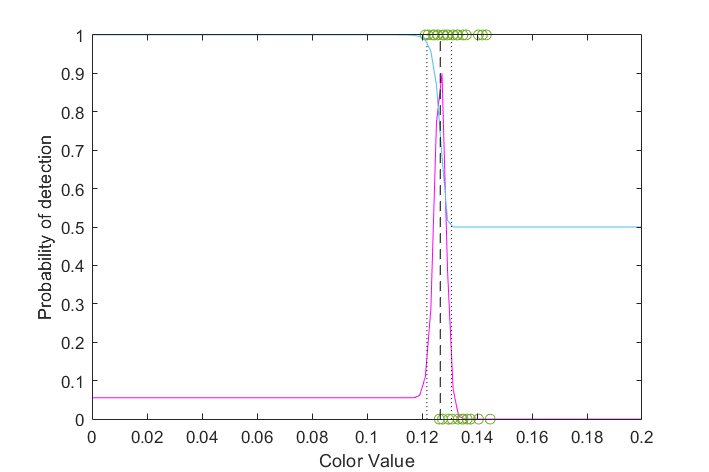
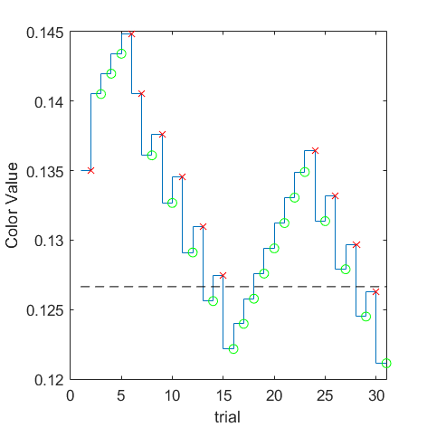
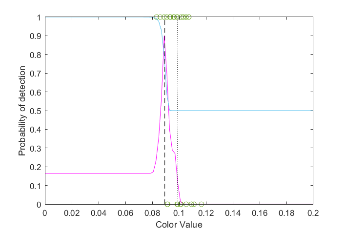
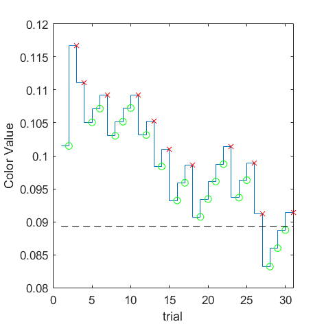
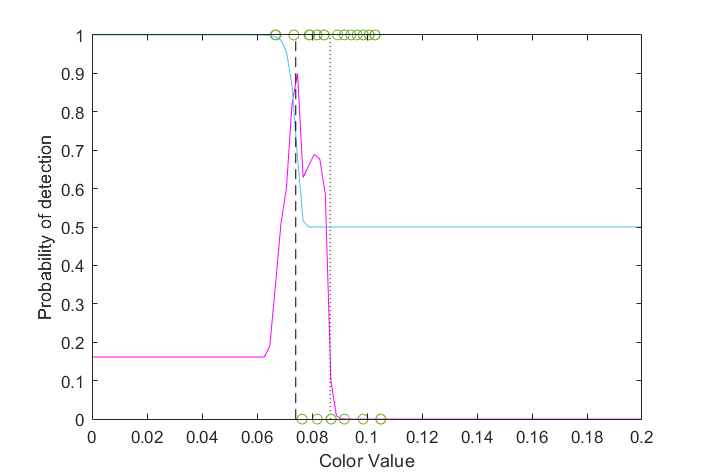
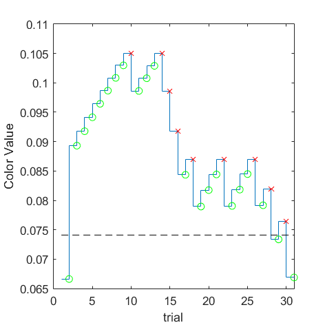
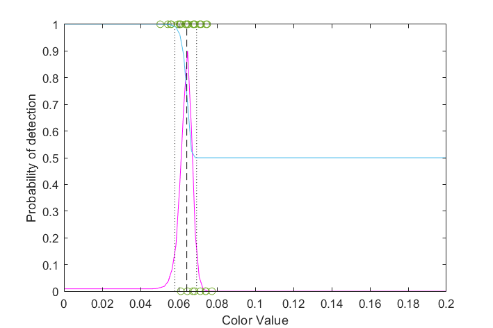
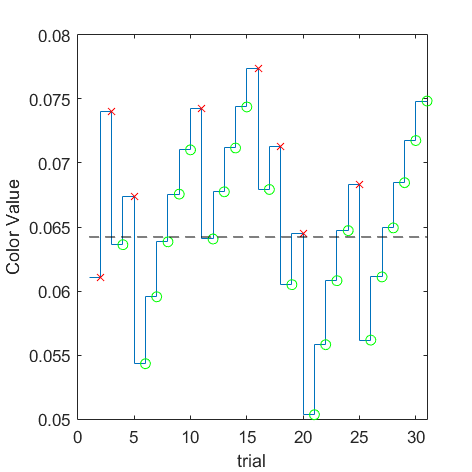
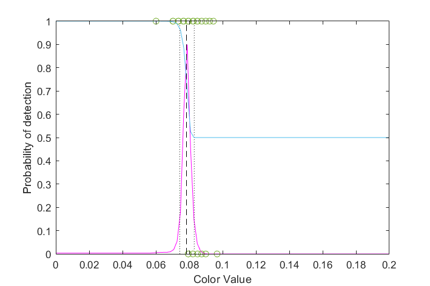
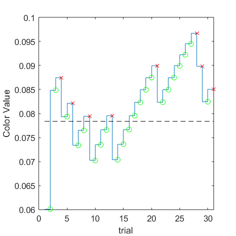

| 

(VRR_Frequency=8/Size_Degree=16/Gabor_Frequency=0.5) = 0.12665 | 

(VRR_Frequency=8/Size_Degree=16/Gabor_Frequency=1) = 0.0893355 | 

(VRR_Frequency=8/Size_Degree=16/Gabor_Frequency=2) = 0.0740984 | 

(VRR_Frequency=8/Size_Degree=16/Gabor_Frequency=4) = 0.0642215 | 

(VRR_Frequency=8/Size_Degree=16/Gabor_Frequency=8) = 0.0783707 |